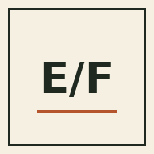

Home Screen App

Estimate/Feed
Install the feed estimator as a standalone app. The app shell is cached so it can reopen even when the network is unavailable.
iPhone / iPad: tap Share → Add to Home Screen. Apple requires this step from the browser.